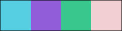

Created by Irene Smith in 2006 as part of a web design course. This page was created for Lesson one. The colors used here were selected from the background tile and are as follows:
| LINK: | #56cfe2 |
| TEXT: | #915ed9 |
| VISITED: | #39c78d |
| BACKGROUND | #f2cfd3 |
I'm pretty sure that this tile was created according to a tutorial because I'd never have called it tubescope otherwise. I would probably have named it something to do with the color or the fact that this was apparently made with the Easter Egg tube that I got with PSP (PaintShop Pro).